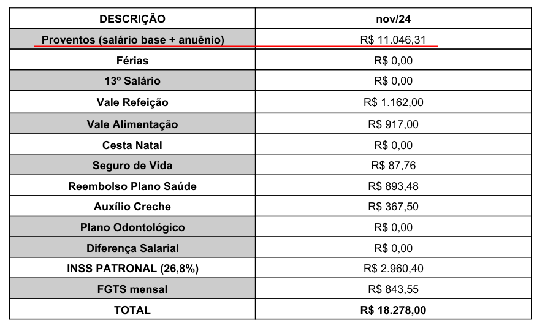
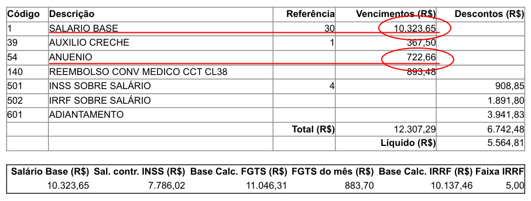
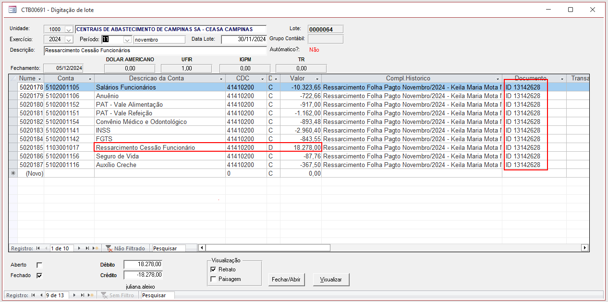
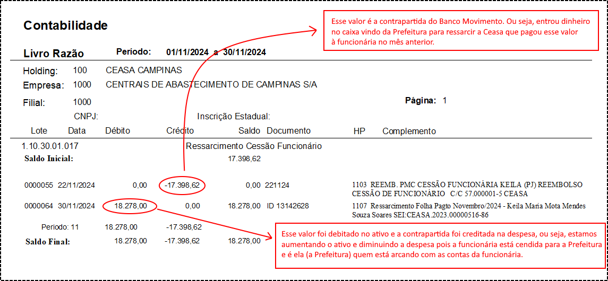

- No momento só há um funcionário cendido que é a Keila. O SEI dela é o CEASA.2023.00000516-86
- Criar o diretório abaixo colocando o mês e ano adequados:
- Ir no SEI e baixar o despacho e recibo de pagamento referente ao mês em questão e salvar no diretório acima.
- No recibo de pagamento, pegar os valores do Salário Base e Anuênio que somados devem dar o mesmo valor que está na primeira linha do despacho: Proventos (salário base + anuênio)
- Fazer os seguintes lançamentos no Néctas:
- Usando os valores que aparece no despacho e no recibo do funcionário atualizar os lançamentos de lote que foram copiados no mês anterior.
- É necessário também atualizar o número do documento com o ID do despacho.
J:\Contabilidade\Ressarcimento Cessão Funcionário\Keila M.M.M.S. Soares - SEI 2023.00000516-86\2024\Outubro 24


| Débito | 1103001017 | Ressarcimento Cessão Funcionário |
| Crédito | 5102001105 | Salários Funcionários |
| Crédito | 5102001106 | Anuênio |
| Crédito | 5102001152 | PAT - Vale Alimentação |
| Crédito | 5102001151 | PAT - Vale Refeição |
| Crédito | 5102001154 | Convênio Médico e Odontológico |
| Crédito | 5102001141 | INSS |
| Crédito | 5102001142 | FGTS |
| Crédito | 5102001156 | Seguro de Vida |
| Crédito | 5102001116 | Auxílio Creche |

